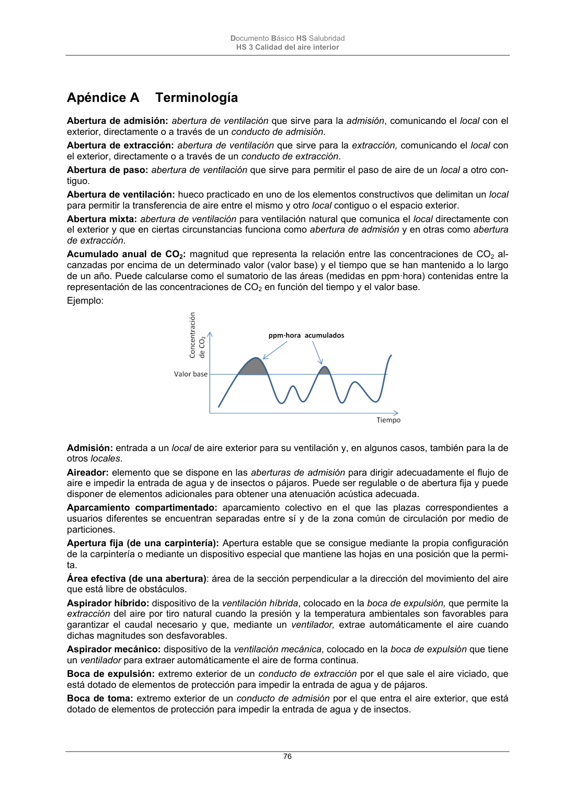

DB-HS · Página 76 · versión 2022-06-14
SHA256: 68df3caacc95f71aee2ec1ba7b2c65ae66155c21e3a8785521b8fdd4fd640d3b · página física 76 de 184 · métodos de encabezado
solo si están cotejados.
Formatos: Markdown · JSON de bloques · PDF p. 76 · imagen PNG
Documento Básico HS Salubridad HS 3 Calidad del aire interior 76 Apéndice A Terminología Abertura de admisión: abertura de ventilación que sirve para la admisión, comunicando el local con el exterior, directamente o a través de un conducto de admisión. Abertura de extracción: abertura de ventilación que sirve para la extracción, comunicando el local con el exterior, directamente o a través de un conducto de extracción. Abertura de paso: abertura de ventilación que sirve para permitir el paso de aire de un local a otro con- tiguo. Abertura de ventilación: hueco practicado en uno de los elementos constructivos que delimitan un local para permitir la transferencia de aire entre el mismo y otro local contiguo o el espacio exterior. Abertura mixta: abertura de ventilación para ventilación natural que comunica el local directamente con el exterior y que en ciertas circunstancias funciona como abertura de admisión y en otras como abertura de extracción. Acumulado anual de CO2: magnitud que representa la relación entre las concentraciones de CO2 al- canzadas por encima de un determinado valor (valor base) y el tiempo que se han mantenido a lo largo de un año. Puede calcularse como el sumatorio de las áreas (medidas en ppm·hora) contenidas entre la representación de las concentraciones de CO2 en función del tiempo y el valor base. Ejemplo: Admisión: entrada a un local de aire exterior para su ventilación y, en algunos casos, también para la de otros locales. Aireador: elemento que se dispone en las aberturas de admisión para dirigir adecuadamente el flujo de aire e impedir la entrada de agua y de insectos o pájaros. Puede ser regulable o de abertura fija y puede disponer de elementos adicionales para obtener una atenuación acústica adecuada. Aparcamiento compartimentado: aparcamiento colectivo en el que las plazas correspondientes a usuarios diferentes se encuentran separadas entre sí y de la zona común de circulación por medio de particiones. Apertura fija (de una carpintería): Apertura estable que se consigue mediante la propia configuración de la carpintería o mediante un dispositivo especial que mantiene las hojas en una posición que la permi- ta. Área efectiva (de una abertura): área de la sección perpendicular a la dirección del movimiento del aire que está libre de obstáculos. Aspirador híbrido: dispositivo de la ventilación híbrida, colocado en la boca de expulsión, que permite la extracción del aire por tiro natural cuando la presión y la temperatura ambientales son favorables para garantizar el caudal necesario y que, mediante un ventilador, extrae automáticamente el aire cuando dichas magnitudes son desfavorables. Aspirador mecánico: dispositivo de la ventilación mecánica, colocado en la boca de expulsión que tiene un ventilador para extraer automáticamente el aire de forma continua. Boca de expulsión: extremo exterior de un conducto de extracción por el que sale el aire viciado, que está dotado de elementos de protección para impedir la entrada de agua y de pájaros. Boca de toma: extremo exterior de un conducto de admisión por el que entra el aire exterior, que está dotado de elementos de protección para impedir la entrada de agua y de insectos.
